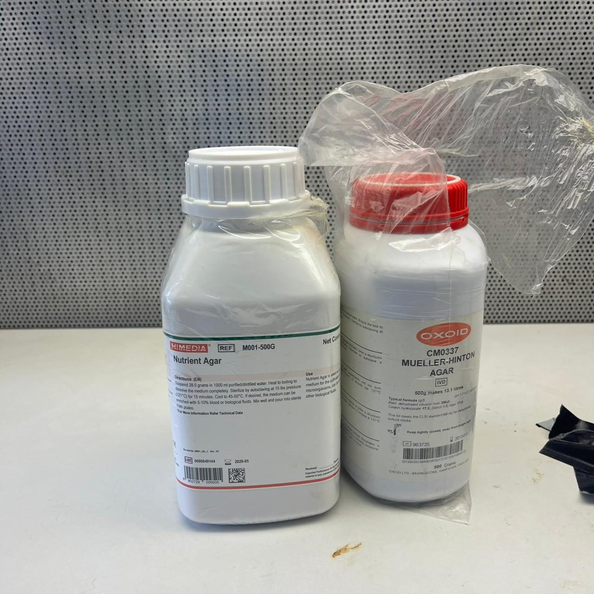
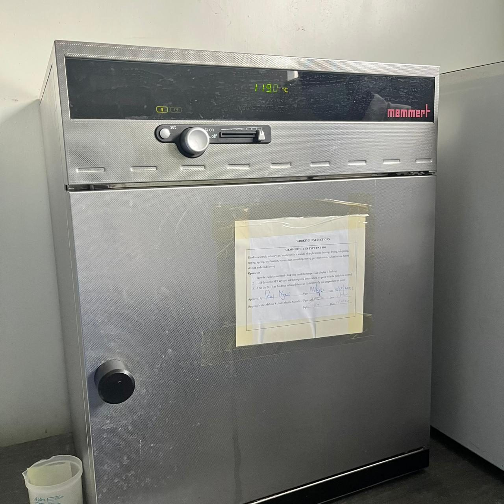
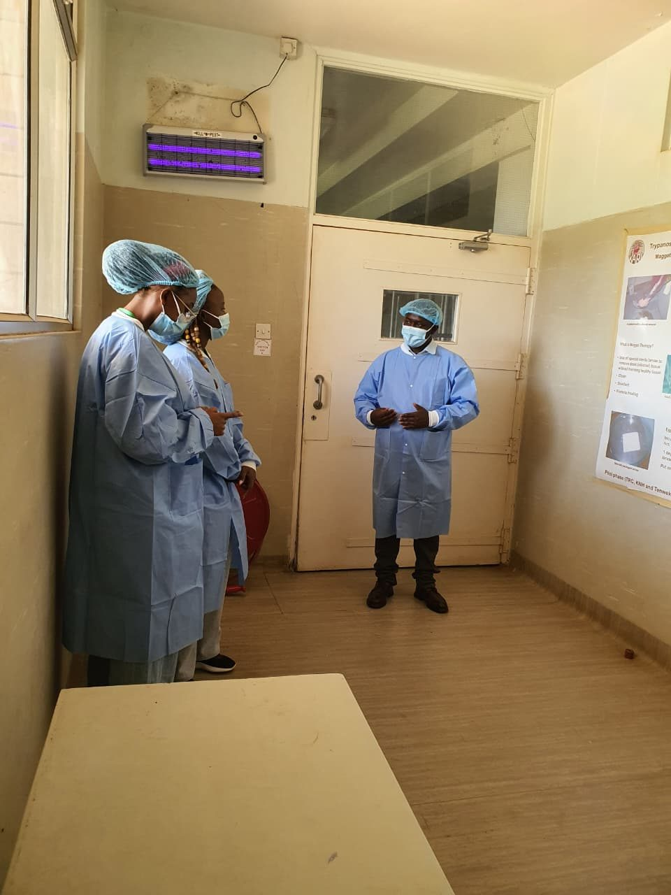
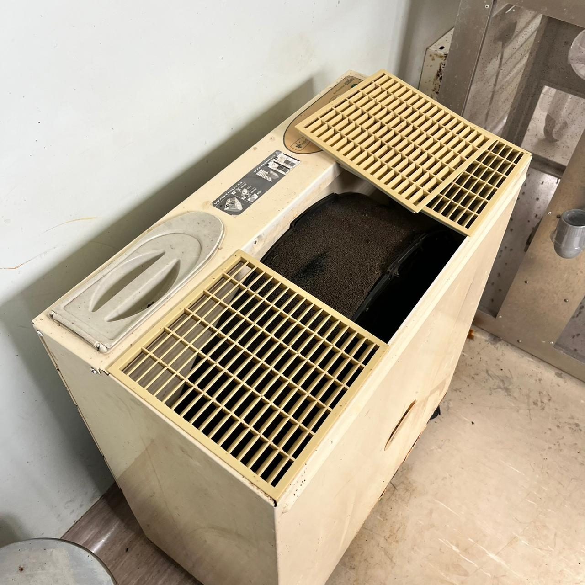

How medical-grade larvae are produced
A general outline of the process used for medical maggots. Living larvae are time-sensitive, so timing matters at every stage.
Eggs are chemically disinfected
Fly eggs are surface-disinfected so the larvae that hatch are free of contaminating microbes.
Larvae hatch in sterile conditions
Handling happens in a laminar-flow cabinet using sterile containers and media.
Quality is checked
Samples are examined and cultured to confirm the larvae are clean and healthy.
Larvae are packed for one patient, one use
Each sterile container is single-use and should never be split or saved for a later cycle.
Fast dispatch and use
Larvae are living, so they should reach the clinic quickly and be applied within about 24 hours of arrival.
Planning a treatment?
Tell us the wound type and where you are. Because larvae are time-sensitive, we will confirm timing with you on WhatsApp.